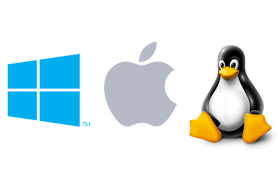

SISTEMAS OPERATIVOS
FACULTAD: INGENIERIA DE SISTEMAS E INFORMATICA
DOCENTE: ING. PITA ASTENGO LUIS HONORATO
CURSO: INFORMATICA II
ALUMNO: PFENNIG ALVAN JEY RICHARDSON
TEMA: "SISTEMAS OPERATIVOS ENFOCADOS EN PC"

Indice del Contenido
1. Introducción a los Sistemas Operativos
- ¿Qué es un sistema operativo?
- Importancia de los sistemas operativos.
- Vista general: Linux, MacOS y Windows.
- Importancia
- Navegación
- Impacto en el mundo digital
2. Linux
- Introducción y breve historia.
- Características principales:
- Ventajas y desventajas.
- Distribuciones mas importantes:
- Ayuda Audiovisual
3. MacOS
- Introducción: exclusividad en dispositivos Apple.
- Historia y evolución.
- Características principales:
- Ventajas y desventajas.
- Recursos recomendados.
- Ayuda Audiovisual
4. Windows
- Introducción: el sistema operativo más popular.
- Historia y versiones principales.
- Características principales:
- Ventajas y desventajas.
- Recursos recomendados.
- Ayuda Audiovisual
7. Fuentes Bibliográficas